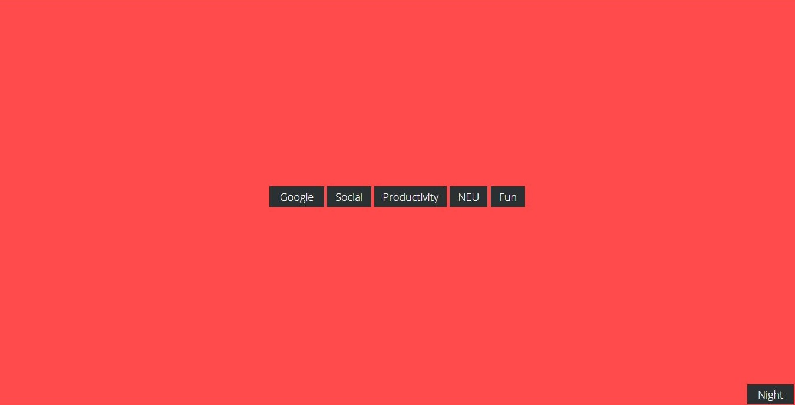

About Me
Hi! My name is Vincent Carlino. I'm a second-year student at Northeastern University majoring in Computer Science and minoring in Music Recording.I have skills and experience with programming in Java, HTML, CSS, C++, and I am currently teaching myself JavaScript and React Native. I’m looking for a position as either a back-end developer or as a web developer to help give me experience in programming real products that will be released to the public. I’d like to gain more experience in developing programs with a team and I’m looking to expand my knowledge of other languages.
Personal Work
Music Editor
In my Object-Oriented Programming class, I was responsible for constructing and implementing a complete music editor as a final project. The editor is able to read from certain files to contruct songs and has a variety of standard features such as the ability to add and remove notes from the piece as well as pause/play functionality. This project was used to test our knowledge and understanding of a variety of OOP design patterns. As extra credit, my partner and I also implemented functionality for adding repeats in a piece of music.
Project Pedometer
Project Pedometer is a mobile game that I am currently co-developing with 3 other programmers from my home town. The game is planned to play like a turn-based RPG that utilizes the pedometer in the mobile device to track and accumulate currency that is used to perform actions in-game. The project is being used as a learning experience by my team to get familiar with programming in React Native.
My Startpage
Startpages are simple HTML files that typically list your most frequently used sites and services. There is an abundance of startpage templates online that users can tweak to meet their needs. I constructed my own startpage with functional dropdown menus and a night-mode button.
